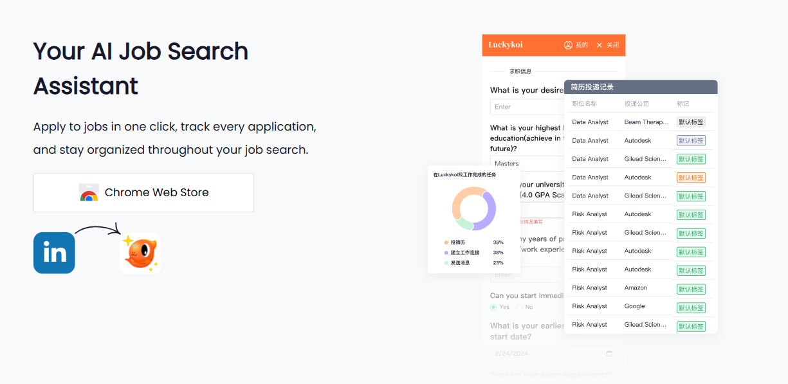
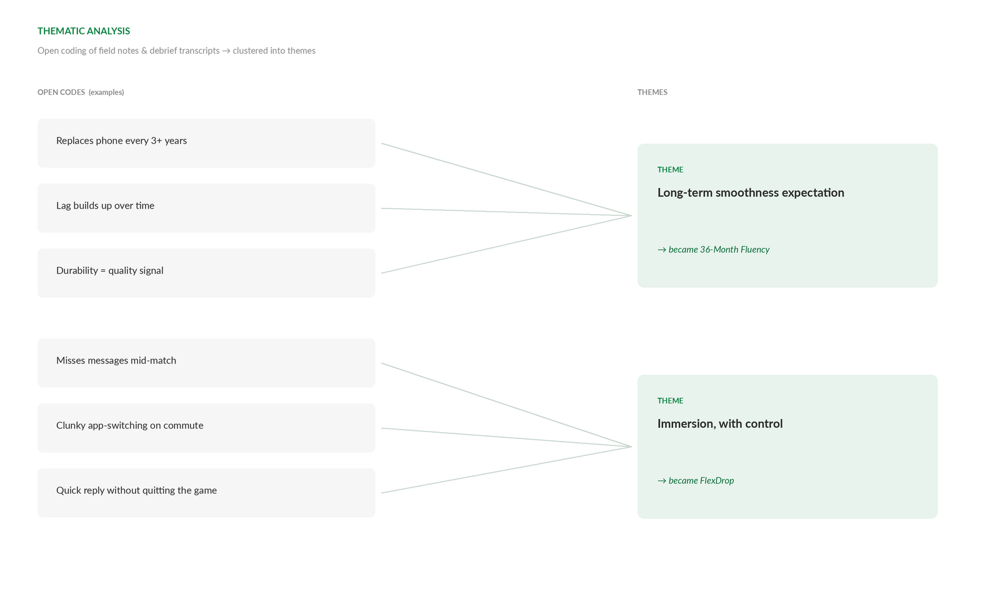

Selected Work

VIEW
Repositioning an AI Job-Search Product: Features → Trust
5 think-aloud sessions uncovered the trust barriers behind 70% first-week churn — fixes shipped, retention 30% → 42%.

VIEW
The Foundational Study Behind a TV Brand's U.S. Repositioning
FGDs (N=19) + survey (N=416) produced the "Feel Good, Live Outdoors" positioning — ~10% CTR lift on targeted ads.

VIEW
From Ethnography to Kano: How 10 Days in India Became Two Global Features
8 ethnographic sessions → Kano (n=150) → two features shipped to 500M+ devices worldwide.